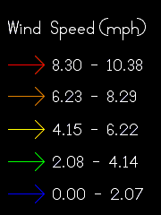
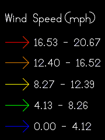
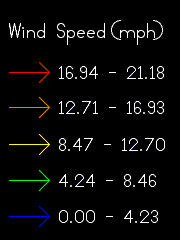
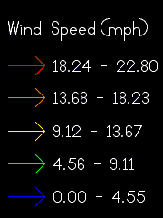
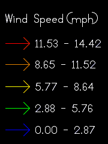
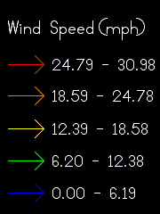
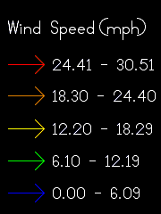
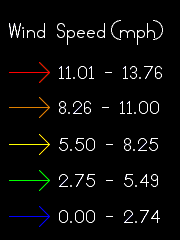
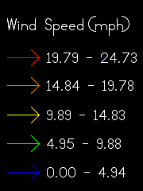
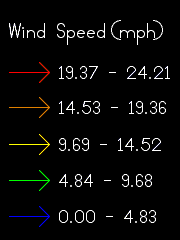

WRF










{{fire_name}}
Wind Legend
10m Wind 1200
10m Wind 1300
10m Wind 1400
10m Wind 1500
10m Wind 1600
10m Wind 1700
10m Wind 1800
10m Wind 1900
10m Wind 2000
10m Wind 2100
T (F)

NOTICE:
This is a research prototype that is still undergoing changes. We do not guarantee its accuracy or stability.